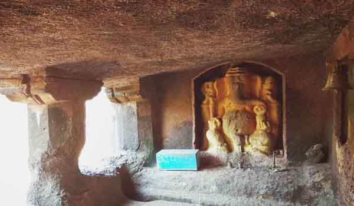

पन्हाळेकाजी लेणी ही कोटजाई नदीच्या काठावर आहेत. या आश्चर्यकारक लेण्या तिसर्या शतकात बांधल्या गेल्या आहेत. हीनयान, बुद्ध, गणपत्य आणि नाथ पंथांच्या २९ लेण्यांचा गट आहे ह्या लेणी कोटजाई आणि धक्ती नद्यांच्या संगमावर वसलेले आहेत, ज्यांनी अनेक शतकांपासून त्यांचा नैसर्गिक गौरव टिकविला आहे.
१९७० साली या लेण्या पुन्हा शोधल्या गेल्या. पन्हाळेकाजी लेण्यांची रचना इतर बुद्ध लेण्यांप्रमाणेच आहे. लेण्यांमध्ये हिंदू देवता आणि देवीची विविध शिल्पे आहेत. गुहेत लाकडी तुळई, बौद्ध स्तूप, मानुषी बुद्धाची कोरीव मूर्ती, महा चंद्रनाची छाप, रामायण तसेच महाभारत, गणेशाचे शिल्प आणि बरेच काही आहे.
मागील हजार वर्षांचा गौरवशाली इतिहास असलेली पन्हाळेकाजी लेणी अतिशय शांत आणि मोहक जागा आहेत जिथे पर्यटकांचा इतर ठिकाणांपेक्षा अनोखा अनुभव येतो.
स्थानः
दापोली, महाराष्ट्र
कसे पोहोचाल:
* प्रथम दापोली पोहचा आणि तेथून लोकल वाहतुकीने पन्हाळेकाजी लेण्यांपर्यंत पोहोचण्यासाठी ३१ किमीचा प्रवास करा.
* खेड हे सर्वात जवळचे रेल्वे स्टेशन ३३ कि.मी. अंतरावर आहे.